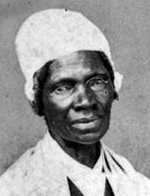

|

|

|
|
|
Feminist, lecturer and religious mystic Sojourner Truth was born a slave
in Ulster County, New York around 1797. Her birth name was Isabella
Baumfree, and she was the eleventh of her parents' twelve children. She
never knew most of her siblings, who had been sold and scattered. As a
young woman, Isabella entered into a respectful but not loving marriage
with another slave, Thomas, and bore five children, two of whom were
sold away from her.
In 1826, a year before the state of New York outlawed slavery,
Isabella fled her owner and lived as a domestic in the home of the
devout Van Wegenen family, taking their name. Here Isabella embarked on
her own mystical and religious journey following an epiphany in which
Jesus revealed Himself to her. Shortly thereafter she left for New York
City, although her children remained behind, indentured by law. Isabella
took up residence with Elijah Pierson and his wife Sarah, evangelists
committed to saving prostitutes. Around 1833, Isabella and the Piersons
joined a fringe religious group called Kingdom of Matthias, run by a
fanatic named Robert Matthews. The sect lived communally near Ossining,
New York, until it disbanded two or three years later following
unfounded accusations of murder in the death of Pierson.
After the dissolution of the Matthias sect, Isabella returned to New
York and worked as a domestic. In 1843, unable to ignore her religious
calling, she traveled east on foot to Long Island and Connecticut.
Renaming herself Sojourner Truth, she preached her own doctrine of love,
brotherhood, and temperance to anyone who would listen. Isabella was a
powerful and, at six feet tall, imposing speaker.
In the fall of 1843, Truth landed in Northhampton, Massachusetts and
found a place in a utopian commune dedicated to abolition and women's
rights, causes she adopted as her life's work. While there she met
abolitionists William Lloyd Garrison and Frederick Douglass and became
acquainted with feminist Olive Gilbert. Gilbert was inspired by Truth's
story, and was well aware of the passions it would generate among
anti-slavery advocates. Because Truth was illiterate, Gilbert decided to
write Truth's biography herself, and The Narrative of Sojourner
Truth was published in 1850. The book covers Truth's early life in
slavery and the triumph of her religious beliefs over her bondage. A
publishing success, the book made Truth nationally famous.
In 1851, Sojourner Truth attended the Akron, Ohio women's convention.
In a powerful address to the convention, Truth argued that women were
the equal of men. Baring her muscular shoulder for convention members to
see, she said:
I have ploughed, and planted, and gathered into barns, and no man
could beat me! And a'n't I a woman? I could work as much and eat as much
as a man--when I could get it--and bear de lash as well! And a'n't I a
woman? I have borne thirteen childern, and seen 'em mos' all sold off to
slavery, and when I cried out with my mother's grief, none but Jesus
heard me! And a'n't I a woman?
Truth believed that her oppression stemmed as much from her gender as
from her race. Thus, to her way of thinking, both obstacles had to be
overcome in order for African American women to achieve freedom.
Truth's speech was very well-received in many circles, particularly
among feminists. Her fame established, Truth traveled widely,
astonishing and electrifying audiences, singing, preaching, and
advocating equality. "We'll have our rights, see if we don't; and you
can't stop us from them; see if you can." In 1863, a pair of highly
flattering essays by Frances Dana Gage and Harriet Beecher Stowe were
published and they transformed Truth into a monumental, almost mythical
persona.
During the Civil War, Truth raised money for African American
Volunteer regiments. She frequently visited army camps in the North,
earning money through lecturing and selling her autobiography. In 1864,
Abraham Lincoln received Truth as a visitor at the White House. She
remained in Washington for a year, joining the National Freedmen's
Relief Association to counsel newly freed people. She was also involved
in a well-publicized lawsuit against a conductor who manhandled and
injured her while throwing her off a streetcar.
After the war was over, Truth was active in finding jobs for
individuals who had been displaced by the war. She advocated a plan of
voluntary relocation of freedmen to Kansas to work their own farms on
land provided by the government, but the plan came to nothing. She also
opposed the Fifteenth Amendment granting freedmen the vote on the
grounds that it excluded women. In 1875, Truth moved to a commune among
Spiritualist Quakers outside of Battle Creek, Michigan. She remained
there for the rest of her life, dying on November 26, 1883.
Source: Joan Waugh, ed., Facts on File Encyclopedia of American
History: Civil War and Reconstruction, 1856 to 1869 (New York: Facts on
File, 2003), 356-58.
|